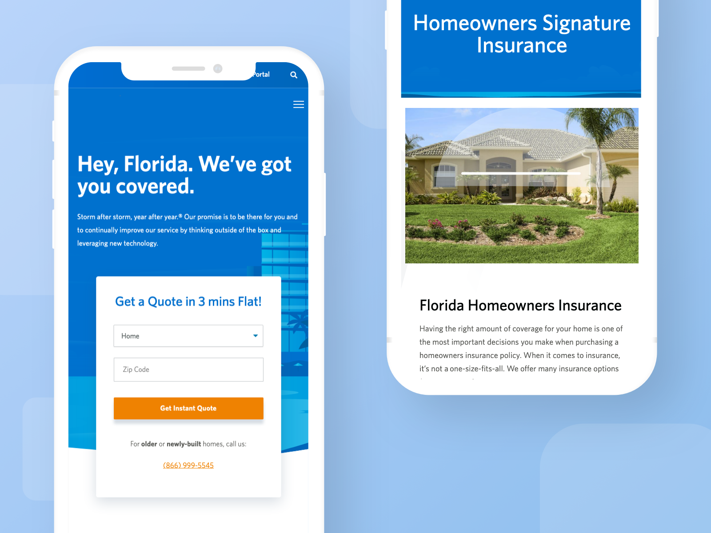
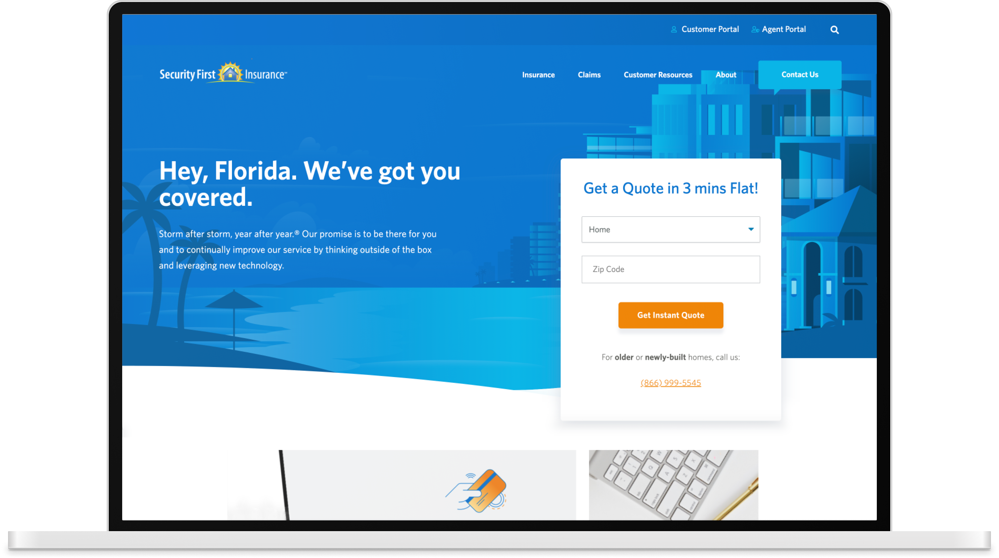
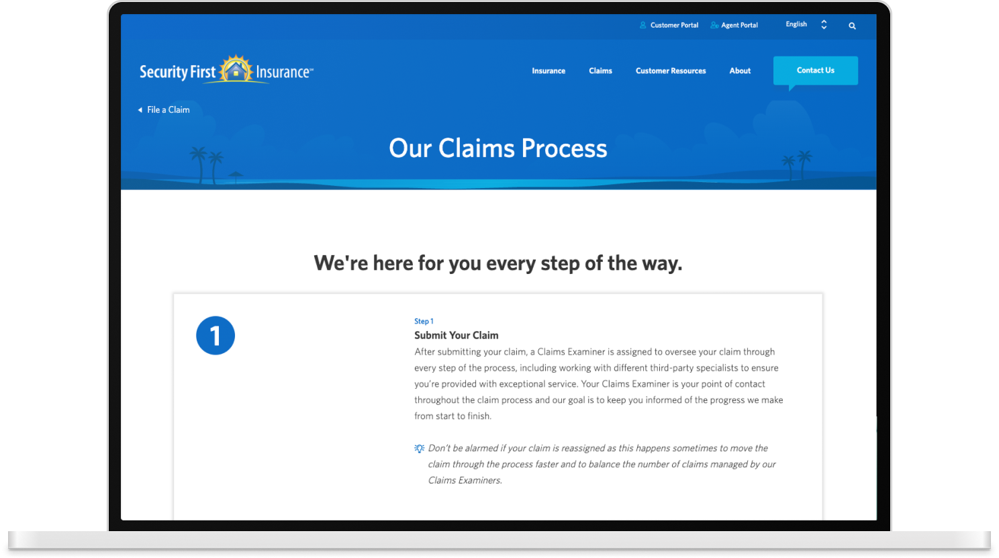

Description
Security First Insurance, a homeowners insurance provider, required a website redesign focused on enhancing consumer understanding of their company and insurance products.
The Challenge
To reimagine the digital presence of Security First Insurance, positioning them as a clear leader in the homeowners insurance market. As a key member of the UX and Marketing team, my focus was on establishing a strong brand foundation that bleeds into the digital interface and overall user experience for our customers.

Our process began with deep user research, where I played a significant role in developing insightful personas. These user profiles, informed by stakeholder collaboration and market analysis, became the cornerstone for defining the brand's core identity. Through collaborative war room sessions and the creation of mood boards, we meticulously crafted the brand guidelines, tone of voice, and overall brand positioning for Security First.

My direct contribution extended to translating this brand identity into tangible UI components. By defining the visual language and interaction patterns, I ensured a cohesive and user-friendly experience that effectively communicated Security First Insurance's value proposition. The goal was to create a website that not only informed potential customers through clear product information and compelling testimonials but also guided them effortlessly through an intuitive navigational structure to get them where they need to be; a direct result of our user-centric approach.
